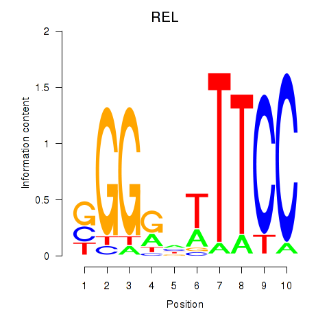

Motif ID: REL
Z-value: 0.573
Transcription factors associated with REL:
| Gene Symbol | Entrez ID | Gene Name |
|---|---|---|
| REL | ENSG00000162924.9 | REL |
![](http://string-db.org/api/image/network?network_flavor=evidence&limit=0&species=9606&caller_identity=MARA&identifiers=9606.ENSP00000255152%0D9606.ENSP00000342667%0D9606.ENSP00000380793%0D9606.ENSP00000282388%0D9606.ENSP00000217455%0D9606.ENSP00000406157%0D9606.ENSP00000334375%0D9606.ENSP00000222462%0D9606.ENSP00000301420%0D9606.ENSP00000369943%0D9606.ENSP00000363360%0D9606.ENSP00000261845%0D9606.ENSP00000323720%0D9606.ENSP00000317912%0D9606.ENSP00000293842%0D9606.ENSP00000319474%0D9606.ENSP00000316491%0D9606.ENSP00000246549%0D9606.ENSP00000310901%0D9606.ENSP00000293362%0D9606.ENSP00000261226%0D9606.ENSP00000265100%0D9606.ENSP00000362637%0D9606.ENSP00000261854%0D9606.ENSP00000334499%0D9606.ENSP00000401277%0D9606.ENSP00000333539%0D9606.ENSP00000391490%0D9606.ENSP00000286639%0D9606.ENSP00000381003%0D9606.ENSP00000293778%0D9606.ENSP00000361359%0D9606.ENSP00000260327%0D9606.ENSP00000260128%0D9606.ENSP00000401362%0D9606.ENSP00000324549%0D9606.ENSP00000224237%0D9606.ENSP00000264674%0D9606.ENSP00000216797%0D9606.ENSP00000263056%0D9606.ENSP00000360967%0D9606.ENSP00000351318%0D9606.ENSP00000357075%0D9606.ENSP00000170630%0D9606.ENSP00000301178%0D9606.ENSP00000354621%0D9606.ENSP00000365924%0D9606.ENSP00000365759%0D9606.ENSP00000316543%0D9606.ENSP00000311221%0D9606.ENSP00000263464%0D9606.ENSP00000299492%0D9606.ENSP00000259075%0D9606.ENSP00000265715%0D9606.ENSP00000273062%0D9606.ENSP00000384223%0D9606.ENSP00000355173%0D9606.ENSP00000336721%0D9606.ENSP00000293308%0D9606.ENSP00000290200%0D9606.ENSP00000268712%0D9606.ENSP00000365682%0D9606.ENSP00000262968%0D9606.ENSP00000367815%0D9606.ENSP00000325355%0D9606.ENSP00000369293%0D9606.ENSP00000360222%0D9606.ENSP00000386169%0D9606.ENSP00000337313%0D9606.ENSP00000343463%0D9606.ENSP00000267853%0D9606.ENSP00000260702%0D9606.ENSP00000391167%0D9606.ENSP00000252660%0D9606.ENSP00000352673%0D9606.ENSP00000309148%0D9606.ENSP00000380999%0D9606.ENSP00000455307%0D9606.ENSP00000300134%0D9606.ENSP00000335247%0D9606.ENSP00000338799%0D9606.ENSP00000381823%0D9606.ENSP00000470526%0D9606.ENSP00000377769%0D9606.ENSP00000439189%0D9606.ENSP00000327509%0D9606.ENSP00000421364%0D9606.ENSP00000343204%0D9606.ENSP00000281043%0D9606.ENSP00000338481%0D9606.ENSP00000377218%0D9606.ENSP00000409581%0D9606.ENSP00000311477%0D9606.ENSP00000355759%0D9606.ENSP00000333568%0D9606.ENSP00000246792%0D9606.ENSP00000299667%0D9606.ENSP00000272430%0D9606.ENSP00000331867%0D9606.ENSP00000470243%0D9606.ENSP00000328998)
{kind=link}
{kind=link}
{kind=link}
{kind=link}
{kind=link}
Top targets:
Gene overrepresentation in biological_process category:
| Log-likelihood per target | Total log-likelihood | Term | Description |
|---|---|---|---|
| 0.1 | 0.1 | GO:1902534 | single-organism membrane invagination(GO:1902534) |
| 0.1 | 0.2 | GO:0000103 | sulfate assimilation(GO:0000103) |
| 0.1 | 0.6 | GO:0042699 | follicle-stimulating hormone signaling pathway(GO:0042699) |
| 0.1 | 0.2 | GO:0002752 | cell surface pattern recognition receptor signaling pathway(GO:0002752) |
| 0.0 | 0.2 | GO:0090403 | oxidative stress-induced premature senescence(GO:0090403) |
| 0.0 | 0.3 | GO:2000158 | positive regulation of ubiquitin-specific protease activity(GO:2000158) |
| 0.0 | 0.2 | GO:1903899 | positive regulation of PERK-mediated unfolded protein response(GO:1903899) |
| 0.0 | 0.3 | GO:0070417 | cellular response to cold(GO:0070417) |
| 0.0 | 0.3 | GO:0035469 | determination of pancreatic left/right asymmetry(GO:0035469) |
| 0.0 | 0.1 | GO:0018312 | peptidyl-serine ADP-ribosylation(GO:0018312) |
| 0.0 | 0.3 | GO:0035771 | interleukin-4-mediated signaling pathway(GO:0035771) |
| 0.0 | 0.3 | GO:0089700 | positive regulation of endothelial cell chemotaxis by VEGF-activated vascular endothelial growth factor receptor signaling pathway(GO:0038033) protein kinase D signaling(GO:0089700) positive regulation of histone deacetylase activity(GO:1901727) |
| 0.0 | 0.2 | GO:0032185 | septin cytoskeleton organization(GO:0032185) |
| 0.0 | 0.2 | GO:0038110 | interleukin-2-mediated signaling pathway(GO:0038110) |
| 0.0 | 0.2 | GO:0044805 | late nucleophagy(GO:0044805) |
| 0.0 | 0.1 | GO:0070446 | cellular response to caloric restriction(GO:0061433) negative regulation of oligodendrocyte progenitor proliferation(GO:0070446) |
| 0.0 | 0.1 | GO:0097156 | fasciculation of motor neuron axon(GO:0097156) |
| 0.0 | 0.1 | GO:0072752 | cellular response to rapamycin(GO:0072752) |
| 0.0 | 0.7 | GO:0042832 | defense response to protozoan(GO:0042832) |
| 0.0 | 0.1 | GO:1903422 | negative regulation of synaptic vesicle recycling(GO:1903422) |
| 0.0 | 0.1 | GO:0032203 | telomere formation via telomerase(GO:0032203) |
| 0.0 | 0.1 | GO:0070901 | mitochondrial tRNA methylation(GO:0070901) |
| 0.0 | 0.5 | GO:1990001 | inhibition of cysteine-type endopeptidase activity involved in apoptotic process(GO:1990001) |
| 0.0 | 0.1 | GO:0060708 | spongiotrophoblast differentiation(GO:0060708) |
| 0.0 | 0.6 | GO:0046597 | negative regulation of viral entry into host cell(GO:0046597) |
| 0.0 | 0.1 | GO:0045360 | regulation of interleukin-1 biosynthetic process(GO:0045360) positive regulation of interleukin-1 biosynthetic process(GO:0045362) |
| 0.0 | 0.1 | GO:0006425 | glutaminyl-tRNA aminoacylation(GO:0006425) |
| 0.0 | 0.0 | GO:0090045 | positive regulation of deacetylase activity(GO:0090045) |
| 0.0 | 0.1 | GO:0071630 | nucleus-associated proteasomal ubiquitin-dependent protein catabolic process(GO:0071630) |
| 0.0 | 0.2 | GO:0043249 | erythrocyte maturation(GO:0043249) |
| 0.0 | 0.1 | GO:0014846 | esophagus smooth muscle contraction(GO:0014846) |
| 0.0 | 0.1 | GO:0048861 | leukemia inhibitory factor signaling pathway(GO:0048861) |
| 0.0 | 0.1 | GO:0046967 | cytosol to ER transport(GO:0046967) |
| 0.0 | 0.1 | GO:0060010 | Sertoli cell fate commitment(GO:0060010) |
| 0.0 | 0.1 | GO:1903347 | negative regulation of bicellular tight junction assembly(GO:1903347) |
| 0.0 | 0.1 | GO:2000669 | negative regulation of dendritic cell apoptotic process(GO:2000669) |
| 0.0 | 0.1 | GO:0050917 | sensory perception of umami taste(GO:0050917) |
| 0.0 | 0.1 | GO:0019285 | glycine betaine biosynthetic process from choline(GO:0019285) glycine betaine metabolic process(GO:0031455) glycine betaine biosynthetic process(GO:0031456) |
| 0.0 | 0.2 | GO:0060056 | mammary gland involution(GO:0060056) |
| 0.0 | 0.2 | GO:0015705 | iodide transport(GO:0015705) |
| 0.0 | 0.1 | GO:1902626 | assembly of large subunit precursor of preribosome(GO:1902626) |
| 0.0 | 0.0 | GO:0071393 | cellular response to progesterone stimulus(GO:0071393) |
| 0.0 | 0.1 | GO:0016344 | meiotic chromosome movement towards spindle pole(GO:0016344) |
| 0.0 | 0.2 | GO:0061302 | smooth muscle cell-matrix adhesion(GO:0061302) |
| 0.0 | 0.2 | GO:1904627 | response to phorbol 13-acetate 12-myristate(GO:1904627) cellular response to phorbol 13-acetate 12-myristate(GO:1904628) |
| 0.0 | 0.1 | GO:1902162 | regulation of DNA damage response, signal transduction by p53 class mediator resulting in transcription of p21 class mediator(GO:1902162) positive regulation of DNA damage response, signal transduction by p53 class mediator resulting in transcription of p21 class mediator(GO:1902164) positive regulation of intrinsic apoptotic signaling pathway in response to DNA damage(GO:1902231) |
Gene overrepresentation in cellular_component category:
| Log-likelihood per target | Total log-likelihood | Term | Description |
|---|---|---|---|
| 0.0 | 0.2 | GO:0008537 | proteasome activator complex(GO:0008537) |
| 0.0 | 0.1 | GO:0005900 | oncostatin-M receptor complex(GO:0005900) |
| 0.0 | 0.1 | GO:0071458 | integral component of cytoplasmic side of endoplasmic reticulum membrane(GO:0071458) |
| 0.0 | 0.1 | GO:0032002 | interleukin-28 receptor complex(GO:0032002) |
| 0.0 | 0.1 | GO:0043291 | RAVE complex(GO:0043291) |
| 0.0 | 0.6 | GO:0031143 | pseudopodium(GO:0031143) |
| 0.0 | 0.2 | GO:0043196 | varicosity(GO:0043196) |
| 0.0 | 0.3 | GO:0031209 | SCAR complex(GO:0031209) |
| 0.0 | 0.2 | GO:0033256 | I-kappaB/NF-kappaB complex(GO:0033256) |
| 0.0 | 0.1 | GO:0070847 | core mediator complex(GO:0070847) |
| 0.0 | 0.1 | GO:0046581 | intercellular canaliculus(GO:0046581) |
| 0.0 | 0.1 | GO:0070876 | SOSS complex(GO:0070876) |
Gene overrepresentation in molecular_function category:
| Log-likelihood per target | Total log-likelihood | Term | Description |
|---|---|---|---|
| 0.2 | 0.6 | GO:0031896 | V2 vasopressin receptor binding(GO:0031896) |
| 0.1 | 0.2 | GO:0004781 | adenylylsulfate kinase activity(GO:0004020) sulfate adenylyltransferase activity(GO:0004779) sulfate adenylyltransferase (ATP) activity(GO:0004781) |
| 0.0 | 0.3 | GO:0035800 | deubiquitinase activator activity(GO:0035800) |
| 0.0 | 0.1 | GO:0004913 | interleukin-4 receptor activity(GO:0004913) |
| 0.0 | 0.1 | GO:1990404 | protein ADP-ribosylase activity(GO:1990404) |
| 0.0 | 0.1 | GO:0000033 | alpha-1,3-mannosyltransferase activity(GO:0000033) |
| 0.0 | 0.1 | GO:0046970 | NAD-dependent histone deacetylase activity (H4-K16 specific)(GO:0046970) |
| 0.0 | 0.1 | GO:0004911 | interleukin-2 receptor activity(GO:0004911) interleukin-2 binding(GO:0019976) |
| 0.0 | 0.1 | GO:0019981 | interleukin-6 receptor activity(GO:0004915) leukemia inhibitory factor receptor activity(GO:0004923) interleukin-6 binding(GO:0019981) |
| 0.0 | 0.2 | GO:0061133 | endopeptidase activator activity(GO:0061133) |
| 0.0 | 0.1 | GO:0016429 | tRNA (adenine) methyltransferase activity(GO:0016426) tRNA (adenine-N1-)-methyltransferase activity(GO:0016429) |
| 0.0 | 0.1 | GO:0042500 | aspartic endopeptidase activity, intramembrane cleaving(GO:0042500) |
| 0.0 | 0.2 | GO:0015111 | iodide transmembrane transporter activity(GO:0015111) |
| 0.0 | 0.1 | GO:0004906 | interferon-gamma receptor activity(GO:0004906) |
| 0.0 | 0.1 | GO:0031731 | CCR6 chemokine receptor binding(GO:0031731) |
| 0.0 | 0.1 | GO:0004819 | glutamine-tRNA ligase activity(GO:0004819) |
| 0.0 | 0.0 | GO:0035033 | histone deacetylase regulator activity(GO:0035033) |
| 0.0 | 0.2 | GO:0031730 | CCR5 chemokine receptor binding(GO:0031730) |
| 0.0 | 0.2 | GO:0042731 | PH domain binding(GO:0042731) |
| 0.0 | 0.1 | GO:0004727 | prenylated protein tyrosine phosphatase activity(GO:0004727) |
| 0.0 | 0.2 | GO:0038062 | protein tyrosine kinase collagen receptor activity(GO:0038062) |
| 0.0 | 0.1 | GO:0003986 | acetyl-CoA hydrolase activity(GO:0003986) |
| 0.0 | 0.1 | GO:0008384 | IkappaB kinase activity(GO:0008384) |
| 0.0 | 0.1 | GO:0004920 | interleukin-10 receptor activity(GO:0004920) |
| 0.0 | 0.1 | GO:0001595 | angiotensin receptor activity(GO:0001595) angiotensin type II receptor activity(GO:0004945) |
| 0.0 | 0.1 | GO:0000340 | RNA 7-methylguanosine cap binding(GO:0000340) |
| 0.0 | 0.1 | GO:0008449 | N-acetylglucosamine-6-sulfatase activity(GO:0008449) |
| 0.0 | 0.1 | GO:1990254 | keratin filament binding(GO:1990254) |
| 0.0 | 0.1 | GO:0008420 | CTD phosphatase activity(GO:0008420) |
Gene overrepresentation in C2:CP category:
| Log-likelihood per target | Total log-likelihood | Term | Description |
|---|---|---|---|
| 0.0 | 0.4 | ST_IL_13_PATHWAY | Interleukin 13 (IL-13) Pathway |
| 0.0 | 0.6 | PID_IL8_CXCR1_PATHWAY | IL8- and CXCR1-mediated signaling events |
| 0.0 | 0.5 | SA_CASPASE_CASCADE | Apoptosis is mediated by caspases, cysteine proteases arranged in a proteolytic cascade. |
Gene overrepresentation in C2:CP:REACTOME category:
| Log-likelihood per target | Total log-likelihood | Term | Description |
|---|---|---|---|
| 0.0 | 0.0 | REACTOME_NRIF_SIGNALS_CELL_DEATH_FROM_THE_NUCLEUS | Genes involved in NRIF signals cell death from the nucleus |
| 0.0 | 0.3 | REACTOME_NFKB_IS_ACTIVATED_AND_SIGNALS_SURVIVAL | Genes involved in NF-kB is activated and signals survival |
| 0.0 | 0.3 | REACTOME_IL_6_SIGNALING | Genes involved in Interleukin-6 signaling |
| 0.0 | 0.6 | REACTOME_ACTIVATED_NOTCH1_TRANSMITS_SIGNAL_TO_THE_NUCLEUS | Genes involved in Activated NOTCH1 Transmits Signal to the Nucleus |